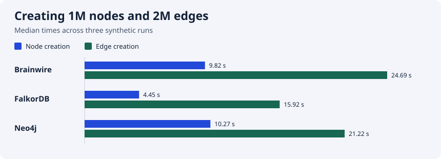

Local CLI on macOS
Install with Homebrew, create a graph on disk and run Cypher in your terminal.
Install and run a query →OPEN SOURCE · APACHE 2.0
Build knowledge graphs, connect company data, and give AI agents context. Follow relationships with Cypher and explore the graph in your terminal.
Experimental beta v0.25.0-beta.1 Check the boundaries before a shared deployment
QUICKSTART
Install with Homebrew, create a graph on disk and run Cypher in your terminal.
Install and run a query →Start a Bolt server for applications and connected clients. Docker Compose keeps the demo graph in a named volume across container restarts.
Start the Docker demo →The public image includes a small example schema. Create two nodes and see the relationship in the result.
BRAINWIRE_IMAGE=ghcr.io/allandefraga/brainwire:v0.25.0-beta.1 # brainwire-release-version
docker run --rm --network none "$BRAINWIRE_IMAGE" cypher \
--database /data/demo --ontology /opt/brainwire/example-schema.json \
--query "CREATE (c:Customer {entity_id:'customer-1', name:'Ada'})-[r:IN_SEGMENT]->(s:Segment {entity_id:'segment-1', name:'beta'}) RETURN c.name AS customer, type(r) AS relationship, s.name AS segment"[["Ada", "IN_SEGMENT", "beta"]]Docker removes this disposable graph when the command exits. Start the server with a persistent volume →
The Brainwire tap currently builds v0.24.0-beta.2 from source. Install it, link a project to a decision and query that relationship with brainwire.
brew install allandefraga/brainwire/brainwire
brainwire_prefix="$(brew --prefix allandefraga/brainwire/brainwire)"
export PATH="$brainwire_prefix/bin:$PATH"
graph_dir="$(mktemp -d)"
brainwire cypher --database "$graph_dir/graph" \
--ontology "$brainwire_prefix/share/brainwire/company-ontology.json" \
--query "CREATE (:Project {entity_id:'release', name:'Release'})-[:HAS_DECISION]->(:Decision {entity_id:'retry', title:'Retry failed requests'})"
brainwire cypher --database "$graph_dir/graph" \
--query "MATCH (p:Project)-[:HAS_DECISION]->(d:Decision) RETURN p.name AS project, d.title AS decision"{"fields":["project","decision"],"rows":[["Release","Retry failed requests"]]}One process can open a RocksDB graph directory at a time. For concurrent clients, use brainwire serve or Docker Compose and connect over Bolt.
You need Git and Docker with Compose. Public Brainwire images require no registry login. On macOS with Colima running, run export DOCKER_CONTEXT=colima before the Docker commands.
git clone --branch v0.25.0-beta.1 https://github.com/allandefraga/brainwire.git # brainwire-release-version
cd brainwire
export BRAINWIRE_IMAGE=ghcr.io/allandefraga/brainwire:v0.25.0-beta.1 # brainwire-release-version
docker compose -p brainwire-demo -f deploy/compose.demo.yaml \
up --no-build --pull always --wait --wait-timeout 900bolt://127.0.0.1:7687demoNATIVE CLI
Build from a source checkout with the repository's pinned Rust toolchain, a C++ compiler, libclang, CMake and pkg-config. Then create and query the project-to-decision relationship.
cargo fetch --locked
cargo build --locked --offline -p brainwire-server --bin brainwire
./target/debug/brainwire --versiongraph_dir=$(mktemp -d)
./target/debug/brainwire cypher --database "$graph_dir/graph" \
--ontology examples/company_brain/ontology.json \
--query "CREATE (:Project {entity_id:'release', name:'Release'})-[:HAS_DECISION]->(:Decision {entity_id:'retry', title:'Retry failed requests'})"
./target/debug/brainwire cypher --database "$graph_dir/graph" \
--query "MATCH (p:Project)-[:HAS_DECISION]->(d:Decision) RETURN p.name AS project, d.title AS decision"{"fields":["project","decision"],"rows":[["Release","Retry failed requests"]]}One process can open a RocksDB graph directory at a time. For concurrent clients, start brainwire serve and connect over Bolt. The command brainwire config show displays the server configuration.
OPTIONAL CLIENT
Use this path for a Python application or the Python examples. Install the helper from the checkout and connect to a running Brainwire server over Bolt.
python3 scripts/setup_python.pyRun the example with .venv-brainwire/bin/python while the Docker demo is running. If you chose a different host port, replace 7687 in the connection URL with that port.
from brainwire import connect
with connect("bolt://127.0.0.1:7687", "demo", auth=None) as graph:
graph.upsert_node("Customer", "customer-1", {"name": "Ada"})
graph.upsert_node("Segment", "segment-1", {"name": "beta"})
graph.upsert_edge(
("Customer", "customer-1"), "IN_SEGMENT", ("Segment", "segment-1")
)
print(graph.run_cypher("""
MATCH (c:Customer)-[:IN_SEGMENT]->(s:Segment)
RETURN c.name AS customer, s.name AS segment
"""))[{'customer': 'Ada', 'segment': 'beta'}]The demo already declares these types. For your own graph, start with an ontology. Use parameters for values and bounded batches for imports. If a write's commit outcome is unknown, reconcile it before retrying.
ARCHITECTURE
Your application connects over Bolt. The Rust engine executes the supported Cypher subset and stores graph records in RocksDB on persistent disk.
Persistent local volumeThe server checks access, executes a transaction and commits changes through the storage layer. The write-ahead log supports recovery before memory buffers flush into disk tables.
The engine uses the query's transaction view, visibility rules and available indexes. Query budgets and timeouts bound supported work; some query shapes still scan.
CAPABILITIES
Use the graph as a durable data layer. Define what can connect and query the resulting nodes and relationships.
Nodes, typed relationships and properties. Read, create, merge, update and delete through the documented Cypher subset.
Query guide →Declare labels, relationships and descriptions. New standalone graphs can enforce optional scalar property types.
Typed properties →Store explicit event nodes or keyed relationships. The Python example reads event pages by time and identity.
Timeline model →Define count, sum and average questions for one node type. The Python example uses the caller's permissions and rejects excess groups.
Metric example →Apply updates to a graph in bounded batches. The standalone ingestion examples include checkpoint and recovery workflows.
DuckDB and DuckLake →Inspect indexes, query-memory counters, persistent files and recovery. Keep a tested checkpoint outside the running volume.
Backup and restore →INGESTION
Map source columns to node and relationship properties. Start with a full load, then rerun the importer when the source changes. These examples target standalone graphs.
Compare snapshots of a local table. A private journal tracks batches for resuming interrupted runs. Enable deletions explicitly for an authoritative source.
Sync a DuckDB table →Read a mapped table at pinned snapshots and apply changes in batches. Each batch checks the source lease before writing.
Sync a DuckLake table →For Obsidian, preview a small Markdown vault and import its notes and wikilinks once into a dedicated empty graph. Choose graph permissions before copying notes. Obsidian example →
TERMINAL WORKSPACE
Run the Python example to add a Customer and Segment to the Docker demo, then inspect their relationship in the read-only terminal workspace.
docker compose -p brainwire-demo -f deploy/compose.demo.yaml exec brainwire \
brainwire shell --connect 127.0.0.1:7687 --graph demo \
--node-label Customer --entity-id customer-1 \
--edge-type IN_SEGMENT --target-label SegmentAllowed types and relationships
Query reservations and refusals
Declarations and readiness
Bounded outgoing relationships
Tab changes panes, r refreshes, ? opens help and q exits. Add --lang pt-BR for Portuguese. Protected servers require credentials and grants; memory telemetry requires instance-admin access.
USE CASES
Connect records from different sources and follow their relationships without piecing together separate lookups.
Document → Topic → Related documentFind who owns a project and follow its decisions to their recorded sources.
Team → Project → DecisionFollow what depends on a service or model the events that changed a ticket.
Service → Deployment → EventLet an agent retrieve connected facts, decisions and sources that its identity can read.
Try the decision example →Project → Decision → SourceUse your pipeline, a connector or a model to map source data into the graph.
EXAMPLE · AGENT CONTEXT
Save a decision and its source in one transaction. Recall the project's decisions and supporting records from a fresh process. Graph grants and node visibility apply to the read.
Follow the Docker demo to start the company graph and save a decision. Then run this command from the same shell with BW_PORT set.
.venv-brainwire/bin/python -m examples.python.agent_memory --uri "bolt://$BW_PORT" \
recall --project project-release --limit 5Release → Keep a rollback window → Release reviewThe output includes the source URL recorded in the graph. Verify the source before citing it.
For protected graphs, a trusted backend can save the example's decision, source and node permissions in one transaction. Keep administrative credentials out of the agent. Use cursor-based recall to read additional pages.
Connect an MCP client with the optional read-only adapter to fetch visible nodes, neighbors and evidence from one configured graph. Set up MCP →
OPERATIONS
A container restart keeps the named volume. A persistent volume is only one copy, so keep a separate backup and test restoring it.
# Check that the graph can serve a request
docker compose -p brainwire-demo -f deploy/compose.demo.yaml exec -T brainwire \
brainwire probe --mode ready
# Stop the demo and keep its named volume
docker compose -p brainwire-demo -f deploy/compose.demo.yaml downAdding --volumes to the stop command deletes the demo data. Start the same Compose project again to reuse its volume.
For controlled trials, experimental request outcomes help reconcile identified writes and initialize ledger storage before a new graph path is published.
BENCHMARK · NOVEMBER 15, 2026
Median times from three synthetic runs of the published Brainwire v0.24.0-beta.2 image, FalkorDB 6.0.0 and Neo4j 2026.09.0.

FalkorDB completed both phases first. Brainwire loaded nodes slightly faster than Neo4j, and Neo4j loaded edges faster than Brainwire. All three passed the post-restart checks. Client protocols, authentication, engine settings and durability controls differed. Peak memory was not measured.
The comparison report includes reads, updates, restart timings and the receipts for all three runs.
BETA BOUNDARIES
Start with rebuildable data and a tested backup. The beta has useful capabilities, with important deployment boundaries.
Budgets and pressure admission reject some work under load. A process-wide RSS ceiling and sustained representative capacity remain unqualified.
Memory guide →Cypher support is a documented subset. Nodes have one fixed label; ANN and BM25 indexes are not native features. Relationship property indexes are experimental and standalone-only.
Language support →Events are application-managed; native AS OF reads and automatic retention are unavailable. Shared deployments need authentication and verified encryption. Optional native Bolt TLS uses a server certificate and requires a restart to rotate it.
Three-voter quorum is experimental. Standard deployment templates run one instance. Local synthetic tests do not qualify multi-machine failover or production performance.
Replication guide →DOCUMENTATION